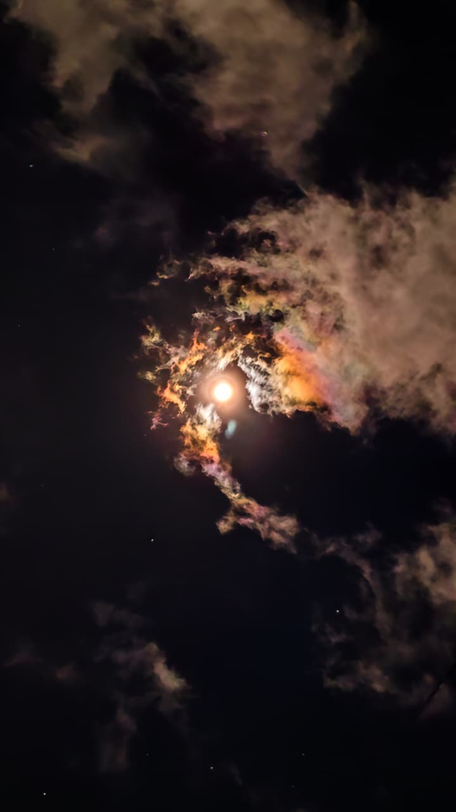
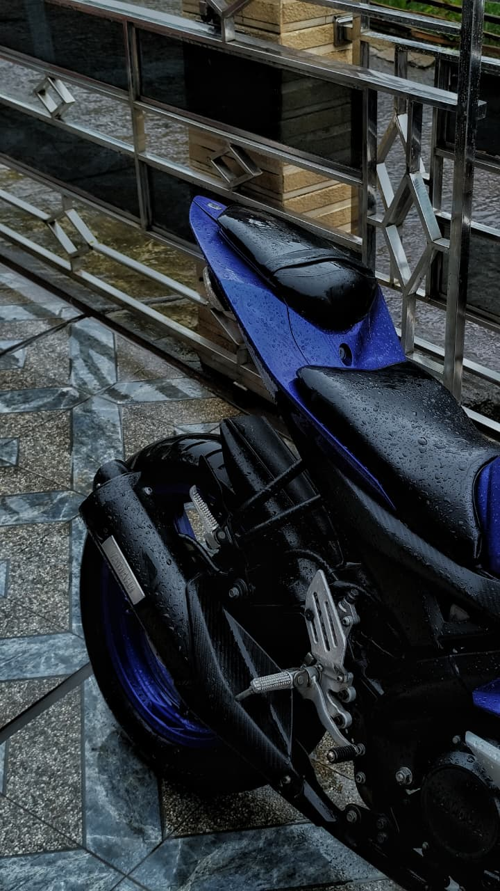
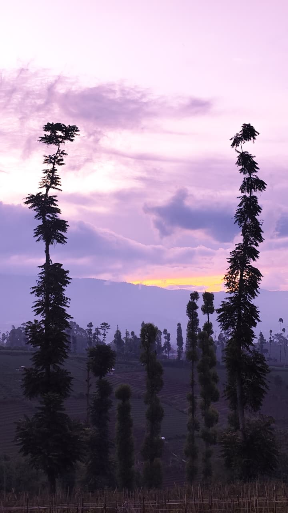
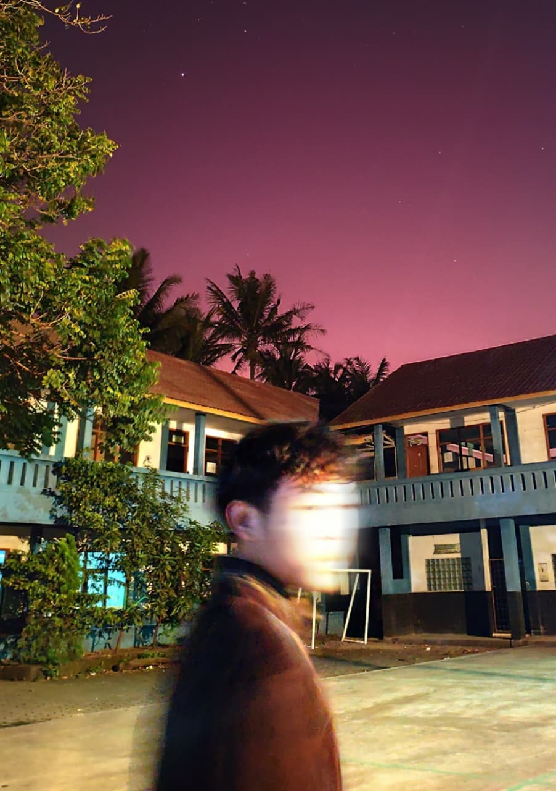
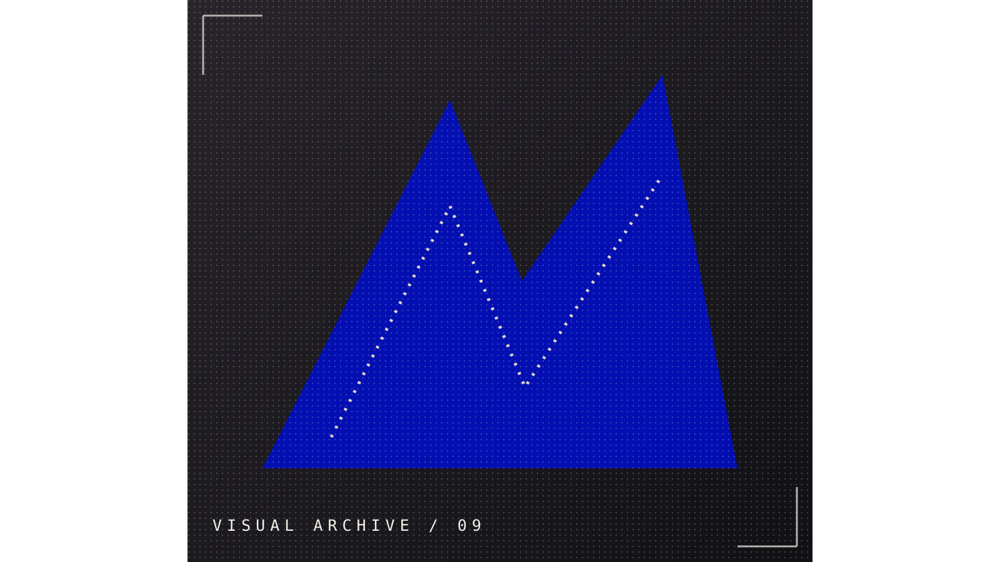
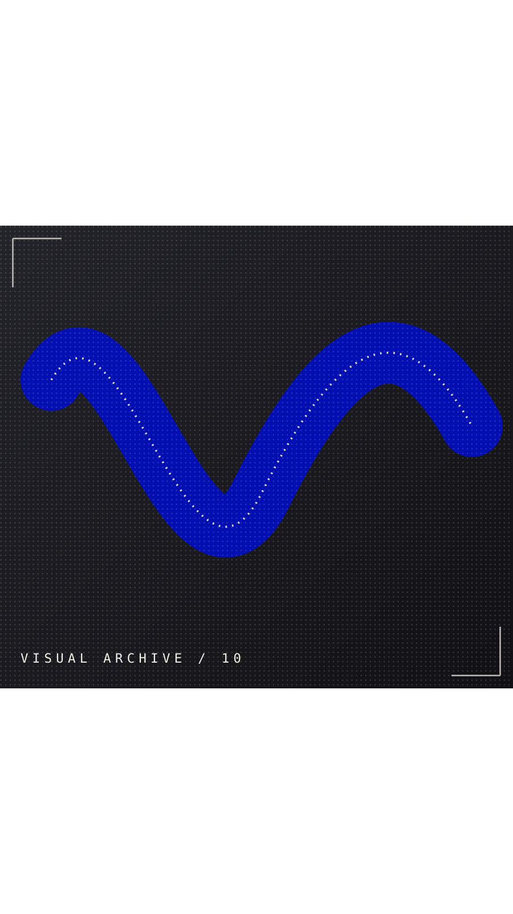
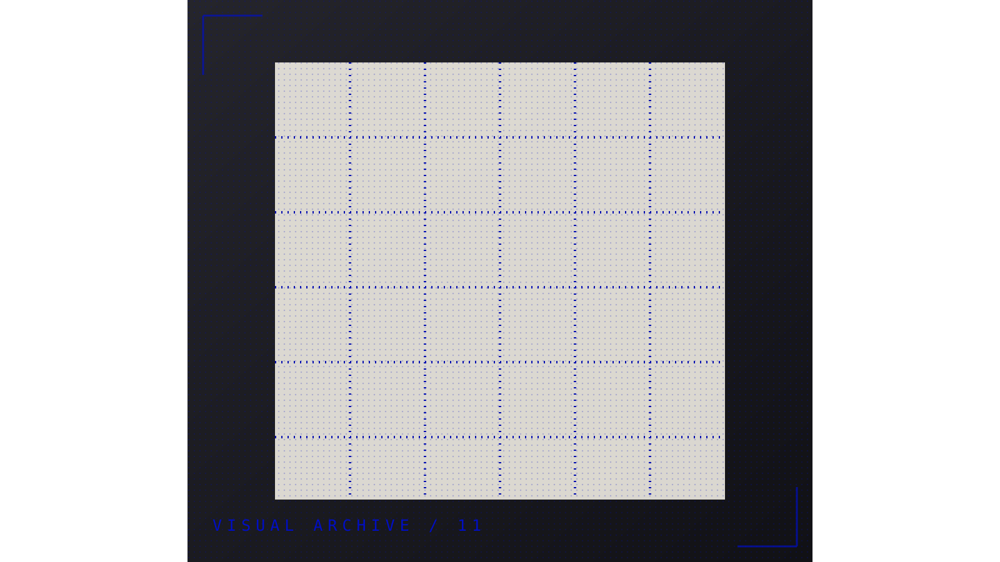
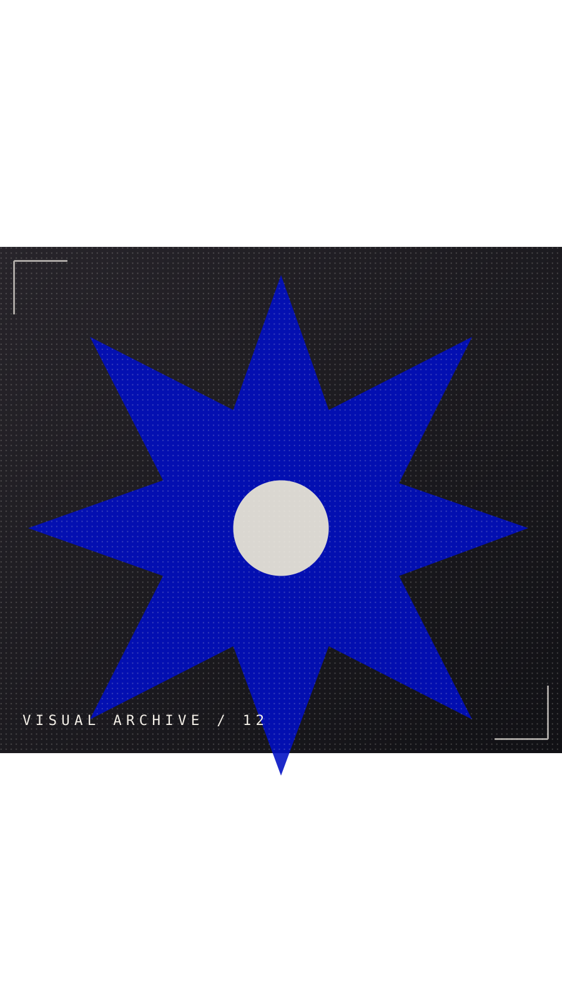

02 / SELECTED MEDIASTILLS, MOTION & SOUND
THE
GALLERY.
Scroll through the stuff. Some experiments, some favourites, all in the archive.

SELECT A FRAME — MAKE IT YOURS
01 / 12
 ARCHIVE / 01
ARCHIVE / 01
ARCHIVE / 02 ARCHIVE / 03
ARCHIVE / 03 ARCHIVE / 04
ARCHIVE / 04
ARCHIVE / 05
ARCHIVE / 06
ARCHIVE / 07 ARCHIVE / 08
ARCHIVE / 08
ARCHIVE / 09
ARCHIVE / 10
ARCHIVE / 11
ARCHIVE / 12DRAG / SWIPE TO EXPLORE
✳ EIGHT VISUALS ARE INSTALLED. SWAP THE REMAINING PLACEHOLDERS BY CHANGING THEIR IMAGE PATHS IN gallery.html.
MOVING IMAGE / 001DRIED.
DRIED.
MOTION PIECE.
A motion piece from your uploaded DRIED.mp4, included here as a playable portfolio video.
DRIED / MOTION PORTFOLIO
✳ FEATURED VIDEO: assets/video/DRIED.mp4. YOUR LOOPING BACKGROUND IS assets/video/ssstik-banner.mp4.
SAKTI
FAVOURITE SIDE A
FAVOURITE SIDE A
PLAYING
SOUNDTRACK / 001MY FAVOURITE
MY FAVOURITE
SONG.
THE WALLS — CHASE ATLANTIC
Hit play in the Spotify player, or choose your own MP3 below to use the local player.
NO LOCAL FILE SELECTED
OPEN TRACK ON SPOTIFY ↗✳ THE SONG IS EMBEDDED FROM SPOTIFY. THE WEBSITE DOES NOT INCLUDE OR DISTRIBUTE THE AUDIO FILE.